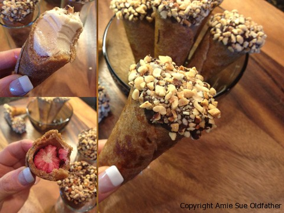
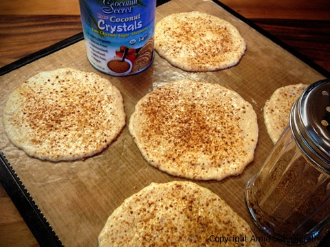
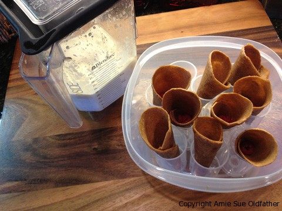
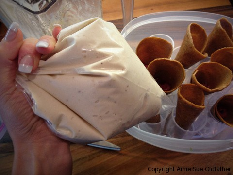
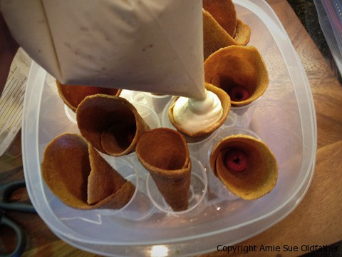
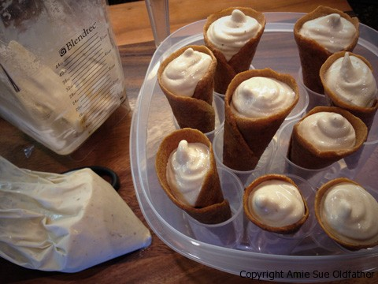
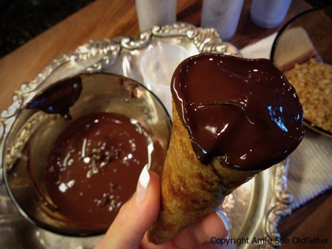
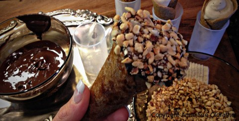

Ice Cream Cone Drumstick Sundae

~ raw, vegan, gluten-free, nut-free ~
Creamy banana ice cream dipped in a rich, extra-thick chocolatey coating topped with peanuts all in a firm but chewy “sugar ice cream cone.”
This is an Ice Cream Cone Sundae that you can enjoy any day of the week! This is the first of many new creations that I have in store for you. This dessert is dairy-free, gluten-free, soy-free, corn-free, lactose-free, grain-free, sugar-free, dye-free, artificial flavor-free, processed-free, have I missed any others? If you are a raw foodist, you can eat it. If you are vegan, you can eat it. If you are a vegetarian, you can eat it. If you love Ding Dongs, you can eat them… If you are a foodie and love ice cream desserts… you can eat them!! Shew, I think I got myself covered here.
Throughout my growing, up years I remember going to the grocery store with my mom. I really don’t recall if I was one of those kids who constantly asked for everything in sight (mom, you can chime in about that) but I do remember drooling over the ice cream cone cooler that used to be near the check-out lanes.
You know, the ones that look like a chest freezer with glass sliding windows on top? I would lean over it, laying half my body on the top of it, cupping my hands around my eyes and peering into the deep cooler, spying the drumsticks. Oh yum. I didn’t have them often, but it wasn’t due to a lack of begging. (no need to comment on this part mom).
I looked up the ingredient list in one of the Nestle Drumstick cones… scary…

Milk Fat, Milk Non-Fat, Chocolate Coating (Sugar, Coconut Oil, Soybean(s) Oil Partially Hydrogenated, Cocoa Powder Natural, Milk Non-Fat Dry, Whey, Milk Powder Whole, Cocoa Processed With Alkali, Soybean(s) Oil, Flavor(s) Artificial, Chocolate, Palm Oil Hydrogenated, Soy Lecithin), Cone (Wheat Flour Bleached, Sugar, Soybean(s) Oil, Cottonseed Oil, Soy Lecithin, Salt), Sugar, Corn Syrup, Whey, Stabilizer (Mono and Diglycerides, Guar Gum, Calcium Sulphate (Sulfate), Cellulose Gum, Carrageenan), Flavor(s) Natural, Annatto Color, Flavor(s) Artificial
Now let’s look at a healthier version… the Nouveau Raw Ice Cream Sundae Drumstick Cone…
Flax seeds, water, banana, cold-pressed olive oil, maple syrup, cinnamon, salt, raw coconut crystals, raw cacao, peanuts (optional), mesquite powder
You decide…Nestle? Nouveau Raw? Nestle? Nouveau Raw? Nestle? Nouveau Raw?…. if you selected the Nouveau Raw version, congratulations you’re a winner. Here is the recipe. :) Enjoy!
Ingredients:
Yields 9 / 6″ cones
Cones:
 1 cup ground flax
1 cup ground flax- 1 cup water
- 1 ripe banana
- 2 Tbsp cold-pressed olive oil
- 2 Tbsp maple syrup
- 1 tsp ground cinnamon
- pinch Himalayan pink salt
- 1 Tbsp raw coconut crystals (sprinkled on cones)
Banana Ice Cream:
- 4 large, frozen bananas
- 2-4 Tbsp water or nut milk
- Raisins or fresh berries (to be added to the base of the cone. See #4 below.
Chocolate Topping:
- 1/2 cup melted cacao butter, grated
- 1/4 cup cacao powder
- 1 Tbsp + 1 tsp mesquite powder
- 1 tsp maple syrup
- Topping; crushed peanuts
Preparation:
Cones:
- In a food processor, fitted with the “S” blade, combine the ground flax, water, banana, olive oil, maple syrup, cinnamon, and salt. Blend until very smooth.
- Spread out in a 6″ circle shape on a lightly oiled dehydrator sheet.
- You will need to work semi-quickly because the flax meal with really get thick on you if you wait too long.
- After the circles are spread out, lightly sprinkle the raw coconut crystals on top.
- Dehydrate for 1 hour at 145 degrees (F), then reduce the temperature to 115 degrees (F) and continue drying for about 6-8 hours or until you can flip and peel from the liner. Continue to dry until they are no longer sticky.
- Wrap into a cone shape around a mold. Dehydrate for another few hours or overnight.
Ice cream:
- Chop the frozen bananas into 1″ discs and place in a high-speed powered blender.
- Add either water or nut milk to help get it going. Blend until creamy.
- Place the banana ice cream into a large Zip-lock baggie, squeeze the excess air out and close. Snip the bottom corner. You know have a piping bag.
- Place a raisin or fresh berry into the bottom of the cone; this will prevent the banana ice cream from oozing out.
- Pipe the ice cream into the cone, all the way to the top.
- Place each cone into a vessel that will hold it upright and put them in the freezer until the ice cream is frozen.
Chocolate Topping:
- In a double boiler gently melt the cacao butter until it is completely in liquid form.
- Be very careful that you don’t overheat the pan. As soon as the cacao starts to melt, turned the burner off.
- You can also use the dehydrator to melt the butter. Place the grated cacao in a glass or stainless bowl and place in the dehydrator at 145 degrees (F) for about 15 minutes, make sure you stir it often and keep an eye on it.
- Once the cacao is melted completely, whisk the powders and maple syrup into the cacao butter until thoroughly combined.
- Take the pan off of the double boiler and set on a towel so it can start to cool.
- Remove the ice cream cones from the freezer and dip each cone into the chocolate, gently tap off the excess chocolate.
- Now quickly roll the chocolate covered part of the cone into the crushed peanuts. Place the cone back into the upright vessel and return to the freezer until frozen.

I sprinkled some raw coconut crystals on top of the wet batter, giving it that brown sugar cone hit.

I had put the ice cream cones in the freezer in a Zip-lock bag for a few days, but only because I didn’t have time to deal with them once they came out of the dehydrator. They froze perfectly, good to know.

Here are the pureed frozen bananas in a Zip-lock bag ready to pipe into the cones. Worked great.

Can you see the raspberry in the bottom of the cone? I did this to prevent the ice cream from leaking out of the bottom. You could use dried fruit as well.

They are ready to eat as is, but I put mine in the freezer at this point so they would harden for the next step.

I made sure to get a chocolaty coating on the edge of the cone as well…
Next, I dipped it in a bowl of chopped nuts making sure to cover all the areas that I got chocolate on. You can use any nut, shredded coconut, hemp seeds, you name it, for this step.

End result! Sorry that the photo is a bit blurry. I am a lefty, trying to operate my iPhone camera with my right hand… its challenging! haha
© AmieSue.com